SACK adapts an offline Koopman model online, in closed form, actively collects informative data while doing the task, and keeps the robot inside the safe set while its model is still changing.
Koopman operator theory represents nonlinear dynamics through a linear operator acting on lifted observables, enabling linear control techniques for nonlinear systems. However, Koopman models are typically learned offline and often degrade under model uncertainty and distributional shift between training and deployment. Existing adaptive Koopman methods either incur significant computational overhead or lack formal safety guarantees, limiting their use in real-time, safety-critical robotics. We propose SACK, a unified framework for safe continual Koopman learning that enables efficient online adaptation during task execution. A nominal Koopman model is first learned offline and then refined through a contractive adaptation law with theoretical convergence guarantees. To improve data efficiency, the framework integrates an active learning strategy that acquires informative data while accomplishing task objectives. We derive explicit bounds on model uncertainty and incorporate them within a robust MPC to establish formal safety guarantees, and introduce a conformal prediction-based tightening mechanism that calibrates safety margins online from observed residuals to reduce conservatism. Extensive simulations and hardware experiments across diverse robotic platforms demonstrate superior performance over state-of-the-art methods in safety-critical environments.
Payload changes, wind, actuator wear and the sim-to-real gap all move the deployed dynamics away from those seen in training. Adapting online is the natural fix, but it creates two problems that pull against each other.
Tracking controllers produce smooth, correlated trajectories. The regressors become nearly collinear, the data Gramian becomes ill-conditioned, and online adaptation stalls exactly when it is needed. Deliberate excitation helps, but it costs task performance.
Constraints enforced with an inaccurate, continually changing model are not guaranteed to hold. The risk peaks right after a shift, when new information is most valuable but the model used to plan exploratory actions is least reliable.
The adaptation law, the exploration objective and the safety margins are derived from the same quantity: the regressor Gramian that governs how fast the model error contracts.
A closed-form, windowed recursive update for the Koopman matrices with exponential contraction of the estimation error under persistent excitation, and an explicit ultimate bound when the true dynamics drift.
A D-optimal log-det objective on the predicted regressor Gramian inside receding-horizon control, with a certified lower bound on its minimum eigenvalue that links exploration directly to contraction.
Model-error bounds propagated into tightened CBF constraints for recursive feasibility and forward invariance, plus conformal residual calibration for less conservative margins with probabilistic coverage.
A 3R manipulator, single and cooperative planar quadrotors, a 7-DoF Franka Research 3 in Gazebo, and a TurtleBot3 in hardware with deliberately induced wheel mismatch.
Offline, an autoencoder learns the lifting map $\psi(\cdot)$ and nominal matrices $(A,B,C)$. Online, $\psi$ and $C$ stay fixed while $(A,B)$ are adapted at every step, feeding an active-learning MPC whose safety constraints are tightened by the current model uncertainty.
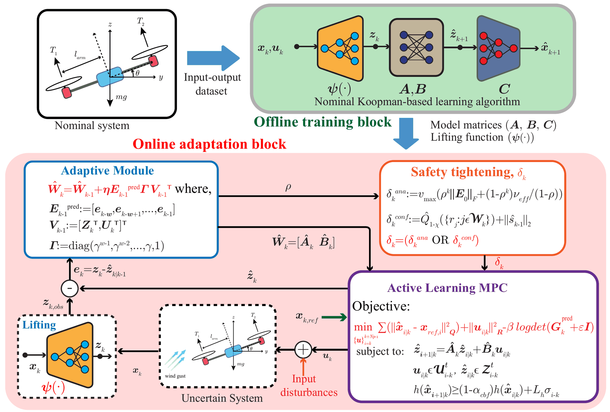
Figure 1. Offline (top), the lifting map and nominal Koopman matrices are identified from nominal input–output data. Online (bottom), the adaptive module updates $\hat W_k = [\hat A_k, \hat B_k]$ from windowed prediction errors; the safety-tightening module computes the one-step margin $\delta_{x,k}$ (analytical or conformal); and the active-learning MPC jointly performs tracking, information-seeking excitation and safety-constrained control.
A dictionary of observables $z_k = \psi(x_k)$, which contains the state itself, lifts the dynamics into a space where they are approximately linear. Predictions over a horizon are then affine in the inputs, so MPC reduces to a QP:
The realized error splits into a truncation term fixed by the dictionary and a parameter-mismatch term that is linear in the regressor $v_k = [z_k^\top, u_k^\top]^\top$. Distributional shift inflates the mismatch term, and because it enters linearly it can be removed online by refining $(A,B)$ alone.
Using the $w$ most recent regressor–observation pairs $(V_k, Z_k^+)$ with exponential forgetting $\Gamma = \mathrm{diag}(\gamma^{w-1},\dots,\gamma,1)$, the Koopman matrices are updated in closed form—no gradient steps, no network retraining:
The estimation error $E_k = W_k^* - \hat W_k$ then evolves through the weighted regressor Gramian $G_k = V_k \Gamma V_k^\top$:
The forgetting factor caps the drift-induced bias: for $\gamma < 1$ the inflation term in $\nu_{\text{eff}}$ is bounded independently of the window length, which justifies moderate windows with exponential forgetting.
Since conditioning of the Gramian is the lever on the convergence rate, the MPC directly rewards it. The predicted matrix $S_k(U)$ stacks the stored regressors (with their forgetting weights) and the planned ones (with unit weight), and the controller trades tracking against information through the exploration weight $\beta$:
The log-det penalizes small eigenvalues most heavily, so it pushes excitation into the directions that are weak in the data already stored, rather than over-exciting directions that are already informative. The nonconvex problem is solved in real time by SQP, with each subproblem a standard QP.
The one-step prediction error $d_k = E_k v_k$ enters the true transition as a bounded disturbance. SACK supplies the CBF margin $\delta_{x,k}$ in one of two complementary ways:
Propagates the adaptation bound into a worst-case margin and horizon-wise constraint tightening:
Theorem 3: recursive feasibility of the MPC, forward invariance $x_k \in \mathcal S$ for all $k$, and ultimately bounded prediction error. Can become conservative when excitation is weak.
Scores the residual not anticipated by an EMA of past discrepancies and takes a finite-sample quantile:
Theorem 4: per-step coverage $\mathbb P\big(h(x_{k+1}) \ge (1-\alpha_{\text{cbf}})h(x_k)\big) \ge 1-\chi$, and safety over any horizon $H < 1/\chi$ with probability $\ge 1 - H\chi$.
The two are complementary operating regimes rather than interchangeable guarantees: the analytical margin gives deterministic robustness under explicit boundedness and excitation assumptions; the conformal margin trades worst-case robustness for lower conservatism and relies on local exchangeability of recent residuals.
Every model is trained offline under nominal conditions and then deployed under post-training shift from parameter changes, external disturbances, or the sim-to-real gap. All controllers use full-state feedback and ACADOS.
Link-mass shifts from −90% to +90%
SimulationMass increase plus time-varying wind
SimulationResistive joint torque, set-valued footprint constraint
GazeboSim-to-real gap and modified wheels
Hardware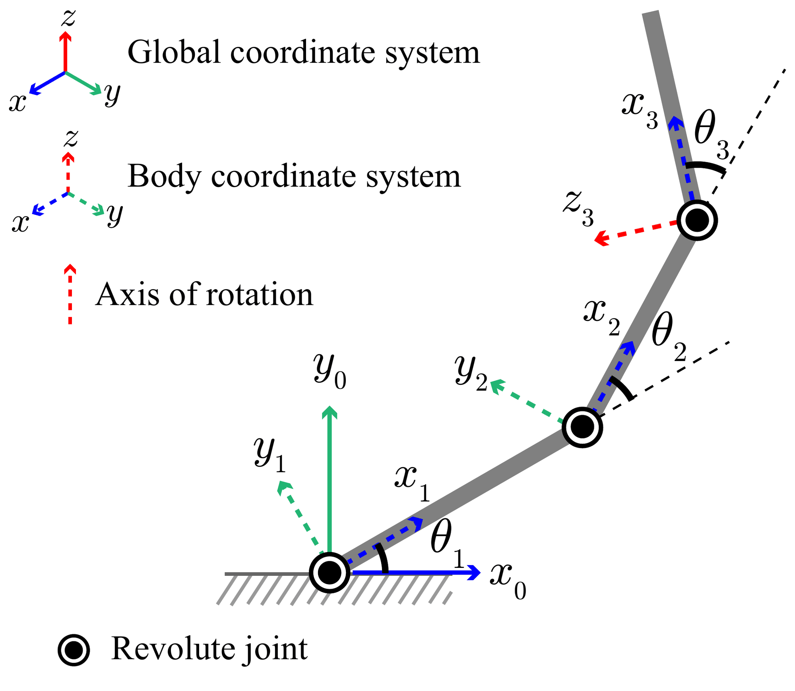
Figure 2. Fully actuated 3R arm in a 3-D workspace; each joint rotates about its body $z$-axis.
The nominal model is trained for link mass $m_i = 0.6$ kg and length $l_i = 1$ m; distribution shift is induced by changing the link masses. The coupled rigid-body dynamics $M(\theta)\ddot\theta + C(\theta,\dot\theta)\dot\theta + G(\theta) = \tau$ make the input map configuration dependent, so the lifted model is only approximately linear—a good stress test for online adaptation.
The reference trajectories are collision-free by design, so any controller that adapts fast enough should stay inside the corridor even without an explicit safety mechanism.
Only SACK and GMPC stay inside the corridor; NK, NAK and AcK leave it. The executed SACK trajectory deviates slightly from the reference to explore informative directions, which is what lets the contractive update suppress the model error so quickly.
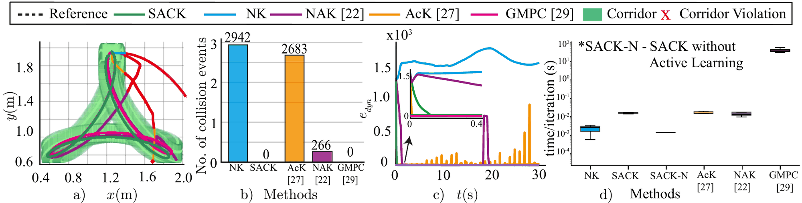
Figure 4. (a) End-effector trajectories in the corridor, red marking violations. (b) Collision events. (c) Dynamic prediction error $e_{\text{dyn}}$. (d) Computation time per iteration; SACK-N is SACK without active learning ($\beta = 0$).
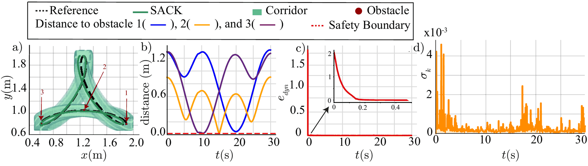
Figure 3. Corridor with obstacles under a 40% link-mass reduction. (a) SACK traverses the corridor without collision. (b) Distance to each obstacle stays above the safety boundary. (c) $e_{\text{dyn}}$ settles in about 0.1 s. (d) The conformal margin $\delta_{x,k}$ shrinks as the model error falls.
With obstacles and corridors removed, SACK tracks hypotrochoid, petal and helix references with RMS errors of 0.0151, 0.0159 and 0.0324 m at −60% mass, and stays at the $10^{-2}$ m level over the full sweep, while NK exceeds 3 m under moderate-to-large shifts.
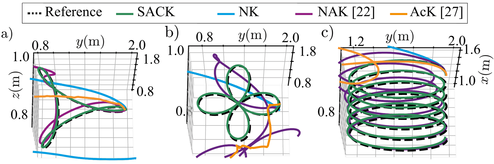
Figure 5. Tracking under a 60% link-mass reduction: (a) hypotrochoid, (b) petal, (c) helix.
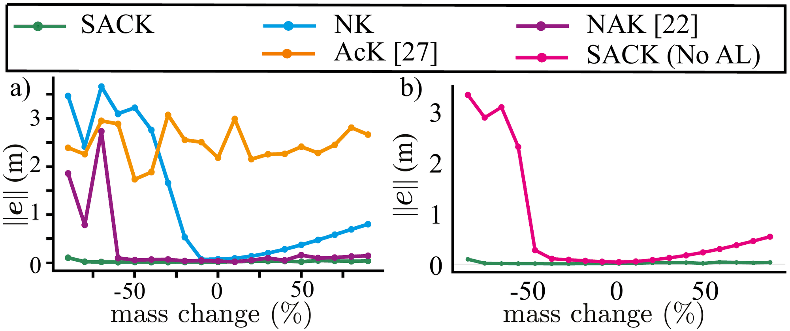
Figure 6. Tracking RMSE over a −90% to +90% mass sweep. (a) SACK vs baselines. (b) Ablation: SACK without the information objective.
An underactuated, agile platform with two thrust inputs. The model is trained with no wind ($m = 2$ kg, $I = 1$ kg·m², $l_{\text{arm}} = 0.2$ m). At deployment, a non-parametric wind disturbance $F_w$ is added to a mass change, so the true Koopman operator drifts over time ($\nu > 0$)—unlike the fixed parametric shifts of the manipulator.
SACK updates the operator directly from lifted prediction errors, so it does not need to identify the individual sources of mismatch separately.
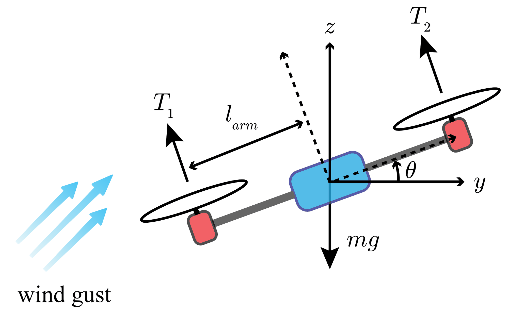
Figure 7. Planar quadrotor with thrusts $T_1, T_2$ under wind.
Each quadrotor adapts its own Koopman model and solves its own MPC, with safety constraints covering both static obstacles and the other agent. Both traverse the obstacle field without collision, the inter-agent distance stays above the threshold, and $e_{\text{dyn}}$ settles in about 0.05 s; a small $\beta = 10$ is enough because the quadrotor dynamics already excite the regressors richly.
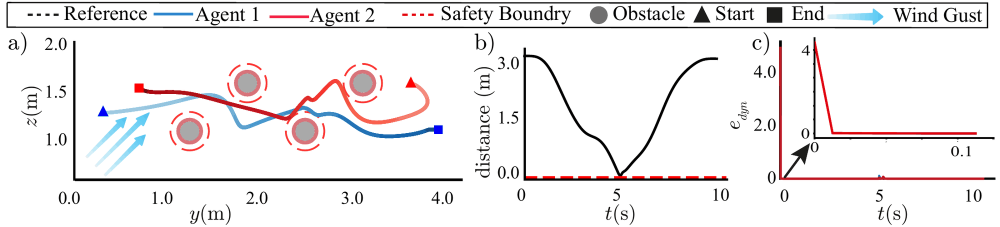
Figure 8. (a) Closed-loop trajectories; arrows show wind direction and dashed circles the obstacle safety boundaries. (b) Inter-agent distance. (c) Dynamic prediction error.
SACK is the only method that satisfies the obstacle constraints throughout. NAK reduces the mismatch but too slowly, so its early predictions are wrong for long enough to cause violations; GMPC struggles because the wind is not part of its GP input, so similar state–input pairs map to different residuals.
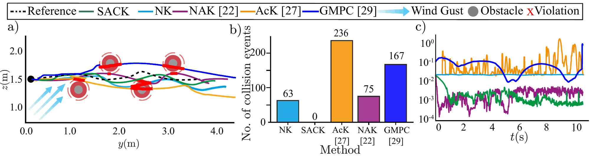
Figure 9. (a) Closed-loop trajectories, red marking safety-boundary violations. (b) Collision events—NK 63, NAK 75, GMPC 167, AcK 236, SACK 0. (c) Dynamic prediction error.
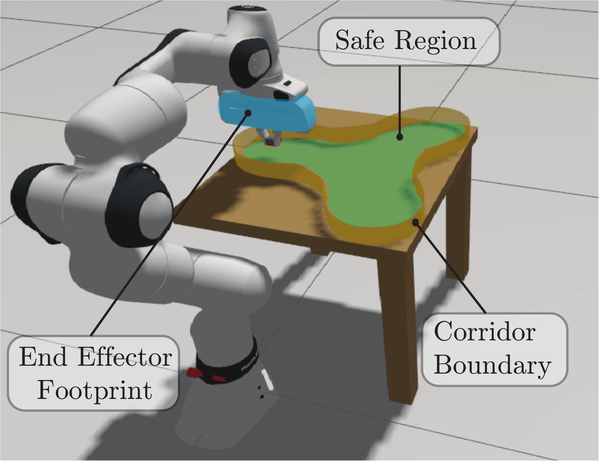
Figure 10. The full projected end-effector footprint (blue) must stay inside the safe region (green).
A 7-DoF arm tracks a reference through a narrow 3-D corridor under a set-valued geometric constraint: motion is unsafe whenever any part of the end-effector footprint crosses the boundary, even if the reference point is inside. A resistive joint torque $\tau_d = -0.4\,\tau$ creates the post-training mismatch.
Under both nominal and disturbed dynamics, SACK keeps the footprint inside the corridor while the conformal tightening adjusts to the residual uncertainty. NAK violates the boundary once the torque disturbance is applied; NK fails in both conditions.
Top: Gazebo rendering of the FR3. Bottom: end-effector path (blue) against the reference (dashed), with the projected footprint shaded and the admissible corridor outlined in orange; red segments mark violations. Use the toggle to switch between nominal and disturbed dynamics.
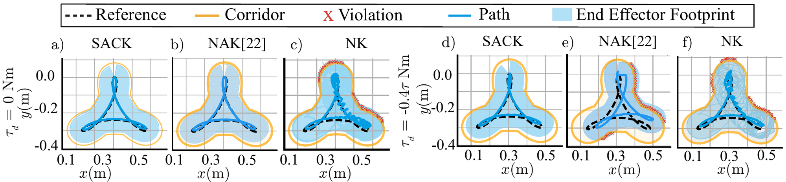
Figure 11. (a–c) Nominal; (d–f) resistive torque $\tau_d = -0.4\,\tau$. (a,d) SACK, (b,e) NAK, (c,f) NK. Red crosses mark corridor violations.
The Koopman model is trained entirely in Gazebo and deployed on a TurtleBot3 Burger. Here the mismatch is not prescribed: SACK must handle the sim-to-real gap plus unmodeled hardware effects. Three configurations of increasing mismatch are tested on an open-circuit (OC) and a closed-circuit (CC) obstacle course.
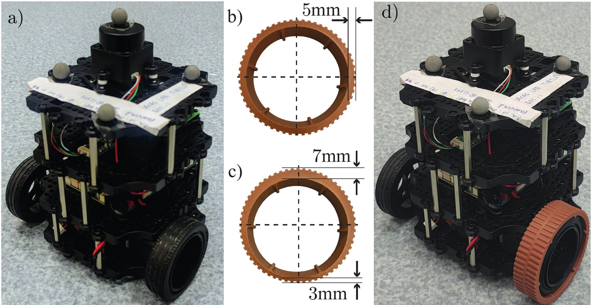
Figure 12. (a) Nominal robot. (b) Axisymmetric ring that enlarges the left wheel's effective radius. (c) Eccentric ring that makes the radius vary periodically. (d) Ring mounted on the left wheel.
Table 1 · 20 hardware trials
| Track | SACK | NAK | NK |
|---|---|---|---|
| Open circuit | 0.2440 unsafe steps | 1.59384 unsafe steps | 1.2676 unsafe steps |
| Closed circuit | 0.1120 unsafe steps | 0.984389 unsafe steps | 1.329669 unsafe steps |
Average tracking RMSE (m) and average number of time steps in the unsafe set. The longer CC track lets SACK collect more informative data, which shows up as lower RMSE.
SACK runs on the TurtleBot3 with the model trained only in Gazebo, under increasing mismatch: nominal wheels, an axisymmetric ring that enlarges the left wheel's effective radius, and an eccentric ring that makes it vary periodically. Use the toggle to switch between the open-circuit and closed-circuit obstacle courses.
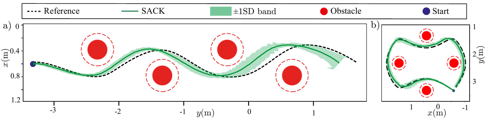
Figure 13. Mean SACK trajectory and ±1 SD band across all 20 trials and configurations: (a) open circuit, (b) closed circuit. The band tightens late in the CC track as adaptation accumulates data.
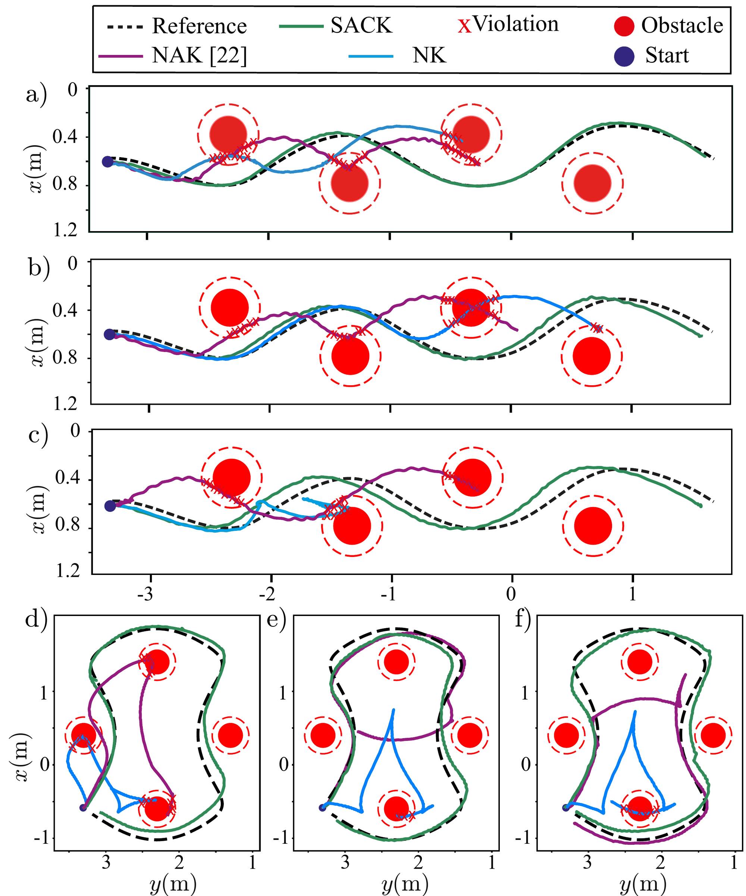
Figure 14. Representative trials on the open circuit (a–c) and closed circuit (d–f): nominal robot (a,d), axisymmetric ring (b,e), eccentric ring (c,f). Red crosses are safety-margin violations.
@article{SACK2026,
title = {SACK: Safe Active Continual Koopman Learning for Uncertain Systems with Contractive Guarantees},
author = {Sah, Chandan Kumar and Singh, Rajpal and Keshavan, Jishnu},
journal = {Preprint},
year = {2026}
}